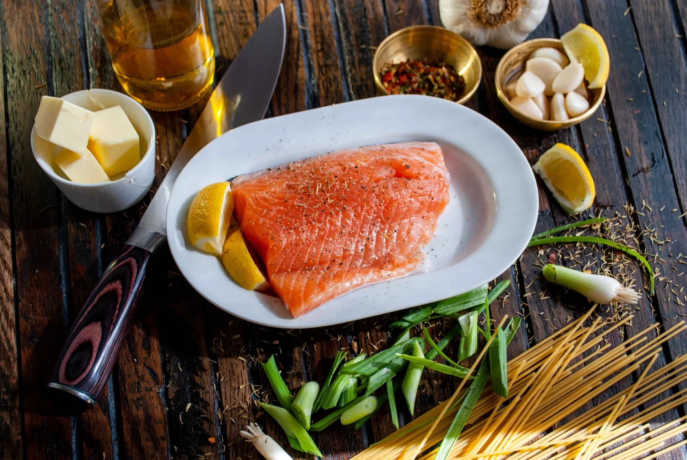

Easy Oven Baked Dill Salmon

This healthy baked salmon is a simple Paleo & Keto dish to serve with your favorite sides or as an anytime protein snack.
INGREDIENTS:
- Salmon filets (~6oz)
- salt (sea salt is preferred)
- dill (dry or fresh)
- Extra Virgin Olive Oil
EQUIPMENT:
- Sheet Pan
- Parchment Paper
- Pin Bone remover
INSTRUCTIONS:
- Thaw salmon (if frozen). Pat dry with paper towels or cloth. Remove any pin bones.
- Preheat oven to 375° F and line a sheet pan with parchment paper.
- Pat the salmon dry and place on parchment paper skin side down. Drizzle just enough extra virgin olive oil to coat. I use my hand to make sure the fish is fully coated. Sprinkle with salt and then dill to your liking. (I use a lot of dill -basically coating the entire top until it’s a solid green with dried dill.)
- Place into pre-heated oven and bake according to the size of your filet. For me, an approximate 6oz piece of salmon that is about 1/2” thick cooks perfectly at 17-18 minutes. For a thinner piece, check it at 12-15 minutes. It should be slightly flakey and will cook a bit further when you take it out of the oven. You really don’t want to overcook it, so check it early just to be sure.
Enjoy with your preferred side dishes!
Notes: You could basically season it anyway you prefer. We love this simple and delicious dill and sea salt on ours.
Need to know how to remove pin bones from salmon? Click here for my post on that.